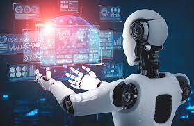

Inteligências Artificiais Generativas
Inteligências Artificiais Generativas (IAGs) são sistemas de inteligência artificial projetados para criar, gerar e produzir conteúdo original, como imagens, textos, músicas e até mesmo vídeos. Ao contrário de outras formas de IA, que são treinadas para realizar tarefas específicas com base em dados existentes, as IAGs têm a capacidade de criar algo novo com base em padrões aprendidos durante o treinamento.
Como funcionam as Inteligências Artificiais Generativas?
As IAGs são frequentemente baseadas em modelos generativos, como Redes Neurais Generativas Adversariais (GANs) e Redes Neurais Recorrentes (RNNs). Esses modelos são alimentados com grandes quantidades de dados para aprender a capturar os padrões e características essenciais do conteúdo específico que desejam gerar. Uma GAN, por exemplo, é composta por duas partes principais: o gerador e o discriminador. O gerador cria amostras de conteúdo, como imagens ou texto, enquanto o discriminador avalia se essas amostras são reais ou geradas. Através de um processo iterativo, o gerador busca melhorar suas habilidades para enganar o discriminador, enquanto o discriminador se torna mais hábil em distinguir o conteúdo gerado do real. Esse processo de competição entre gerador e discriminador resulta em uma melhoria contínua na qualidade das amostras geradas.
Utilização de Inteligências Artificiais Generativas na Agricultura:

As IAGs têm o potencial de trazer inovações significativas para a agricultura, auxiliando em diversas áreas. Abaixo estão alguns exemplos de como elas podem ser utilizadas:
1- Geração de imagens de plantas: As IAGs podem gerar imagens realistas de plantas com base em diferentes fatores, como idade, espécie, condições de crescimento e doenças. Essas imagens geradas podem ser usadas para treinar modelos de detecção de doenças, auxiliando os agricultores a identificar problemas e tomar medidas corretivas precocemente.
2- Otimização do planejamento agrícola: As IAGs podem ser aplicadas para criar simulações e modelos que auxiliam no planejamento agrícola, considerando fatores como clima, tipo de solo, disponibilidade de recursos e histórico de cultivo. Com base nessas simulações, os agricultores podem fazer previsões mais precisas sobre os rendimentos das safras e otimizar o uso de recursos, como água e fertilizantes.
3- Criação de novas variedades de culturas: As IAGs podem ser utilizadas para gerar novas variedades de culturas com características desejadas, como resistência a doenças, maior produtividade ou adaptação a condições climáticas específicas. Isso pode acelerar o processo de melhoramento genético e ajudar na produção de culturas mais resistentes e eficientes.
4- Otimização do controle de pragas e doenças: As IAGs podem analisar grandes volumes de dados, como imagens de plantas infectadas, para identificar padrões e características específicas associadas a diferentes pragas e doenças. Com base nessa análise, os agricultores podem receber recomendações mais precisas sobre o controle de pragas e doenças, reduzindo o uso excessivo de pesticidas e melhorando a saúde das plantas.
5- Criação de receitas agrícolas personalizadas: Com base em informações sobre preferências alimentares, restrições dietéticas e disponibilidade de ingredientes, as IAGs podem gerar receitas personalizadas que utilizem produtos agrícolas específicos. Isso pode ajudar os agricultores a diversificar seus produtos e atender a demandas específicas do mercado.
Esses são apenas alguns exemplos das possibilidades de aplicação das Inteligências Artificiais Generativas na agricultura. À medida que a tecnologia evolui, é provável que surjam mais oportunidades para aproveitar o potencial das IAGs para melhorar a eficiência e a sustentabilidade da produção agrícola.